Character Encodings Overview
üò£üò≤üôâüôàüôäüêóüê®üê≤üêù‚õÑü§£ü§î

Author: David Montaño
Objectives
- Understand the most used encodings
- Understand how to deal with encoding problems
- Read Bytes as the One
Agenda
- Definitions
- The Keyboard and The OS
- Lookup Table Encodings
- Unicode
- Programming Languages Examples
- Util Tips
- Bibliography
Definitions
Bytes
- How many characters can be represented with 1 bit?
- 2
- How many characters can be represented with 1 byte?
- 2*2*2*2*2*2*2*2 = 2^8 = 256
Endianness


[damontic@seven4n]$ lscpu | grep Endian
Orden de los bytes: Little Endian
Characters
- Character: Minimal unit of text that has semantic value.
- Character Set: Collection of Characters that might be used by multiple languages.
Codes
- Code Point: Any numerical value in the Encoding codespace.
- ASCII: 0x41
- Unicode: U+3243F
- Code Unit: The minimal bit combination that can represent a unit of encoded text.
- ASCII: 7-bit code units
- Extended ASCII: 8-bit code units
- ISO-8859-1: 8-bit code units
- utf-16: 16-bit code units
- utf-32: 32-bit code units
- Coded Character Set: A mapping between a code point and a character.
Fonts
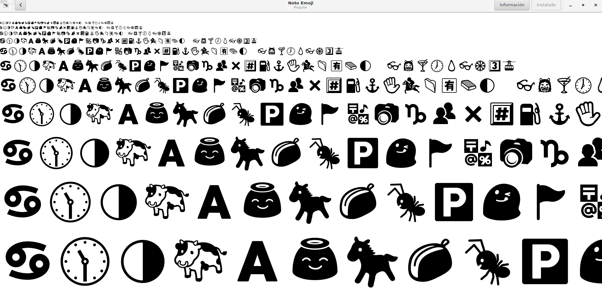gnome-font-viewer
File

The Keyboard and The OS
- Mechanical Layout
- The placements and keys of a keyboard.
- Visual layout
- The arrangement of the legends (labels, markings, engravings) that appear on the keys of a keyboard.
- Functional Layout
- The arrangement of the key-meaning associations, determined in software, of all the keys of a keyboard.
Dead Keys
Special kind of a modifier key that, instead of being held while another key is struck, is pressed and released before the other key.
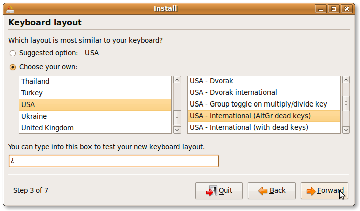Linux GUI Applications: Input
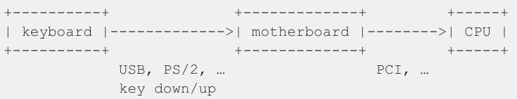 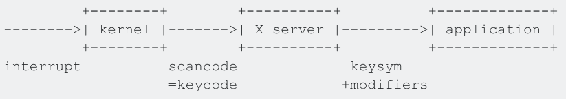Linux GUI Applications: Output
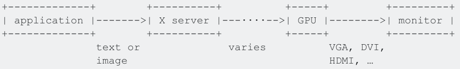Linux xev: X Server Events sent to X's windows
Locales
- Rendering text
- Displaying regional monetary values
- Displaying time and date formats
- Alphabetic idiosyncrasies
Linux Locale
- glibc uses and installs locale
- Must be generated first:
- /etc/locale.gen
- locale.gen
Linux Locale
[damontic@seven4n]$ locale -a
C
es_ES.utf8
POSIX
[damontic@seven4n]$ locale
LANG=es_ES.utf8
LC_CTYPE="es_ES.utf8"
LC_NUMERIC=es_ES.UTF-8
LC_TIME=es_ES.UTF-8
LC_COLLATE="es_ES.utf8"
LC_MONETARY=es_ES.UTF-8
LC_MESSAGES="es_ES.utf8"
LC_PAPER=es_ES.UTF-8
LC_NAME="es_ES.utf8"
LC_ADDRESS="es_ES.utf8"
LC_TELEPHONE="es_ES.utf8"
LC_MEASUREMENT=es_ES.UTF-8
LC_IDENTIFICATION="es_ES.utf8"
LC_ALL=
Windows Locale
- Uses specific language and territory strings
- LCID: Locale Identifier
- 1033 English and 1041 Japanese
- Windows assigns a locale to each thread
- System default locale (LOCALE_SYSTEM_DEFAULT)
- User thread (LOCALE_USER_DEFAULT)
Windows Locale
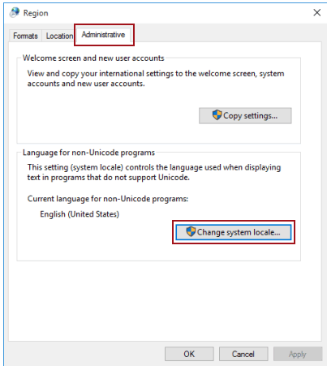Lookup Table Encodings
ASCII
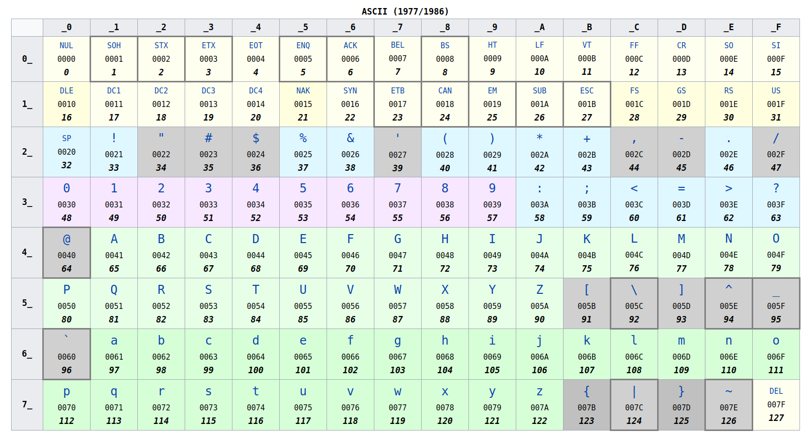ASCII
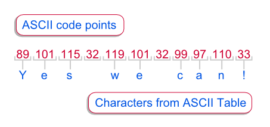ISO_8859-{1-16} Varieties Comparison
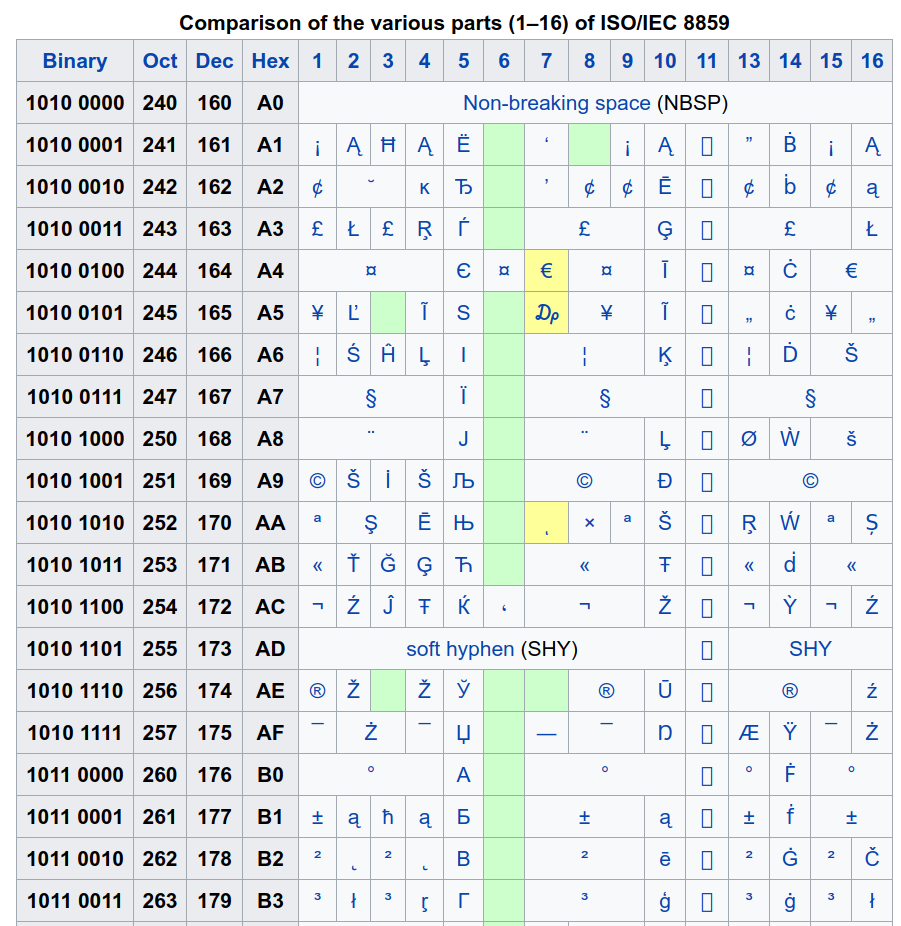Windows Character Sets
- Windows-1250 for Central European languages that use Latin script, (Polish, Czech, Slovak, Hungarian, Slovene, Serbian, Croatian, Bosnian, Romanian and Albanian)
- Windows-1251 for Cyrillic alphabets
- Windows-1252 for Western languages
- Windows-1253 for Greek
- Windows-1254 for Turkish
- Windows-1255 for Hebrew
- Windows-1256 for Arabic
- Windows-1257 for Baltic languages
- Windows-1258 for Vietnamese
[damontic@seven4n]$ man charsets
[damontic@seven4n]$ man ascii
[damontic@seven4n]$ man iso_8859-1
[damontic@seven4n]$ man iso_8859-2
[damontic@seven4n]$ man cp1251
[damontic@seven4n]$ man cp1252
[damontic@seven4n]$ man utf-8
[damontic@seven4n]$ man unicode
Unicode
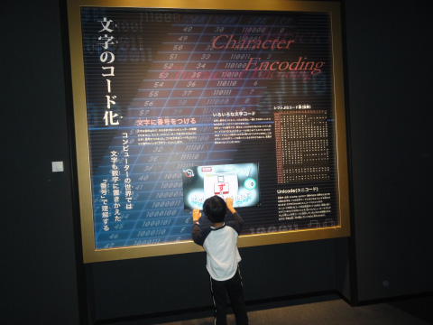Unicode
- Standard ISO 10646 defines the Universal Character Set (UCS)
- All characters of all other character set standards
- Practically all known languages
- Versioned
- 128,172+ defined characters (V 9.0)
Unicode
- Character Space is divided into spaces with 17 planes * 65,536 characters each
- 1,114,112 possible characters (0x0 to 0x10FFFF)
- Basic Multilingual Plane (BMP): 4 Hexadecimal Digits (e.g. U+0058)
- Other planes use 5 or 6 Hexadecimal Digits
Unicode Planes
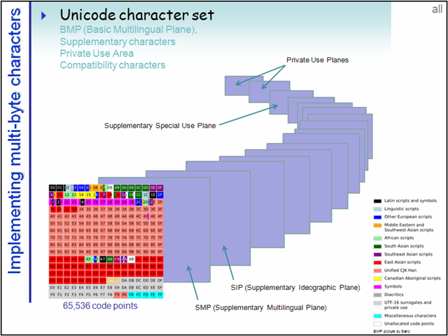Unicode BMP and Blocks
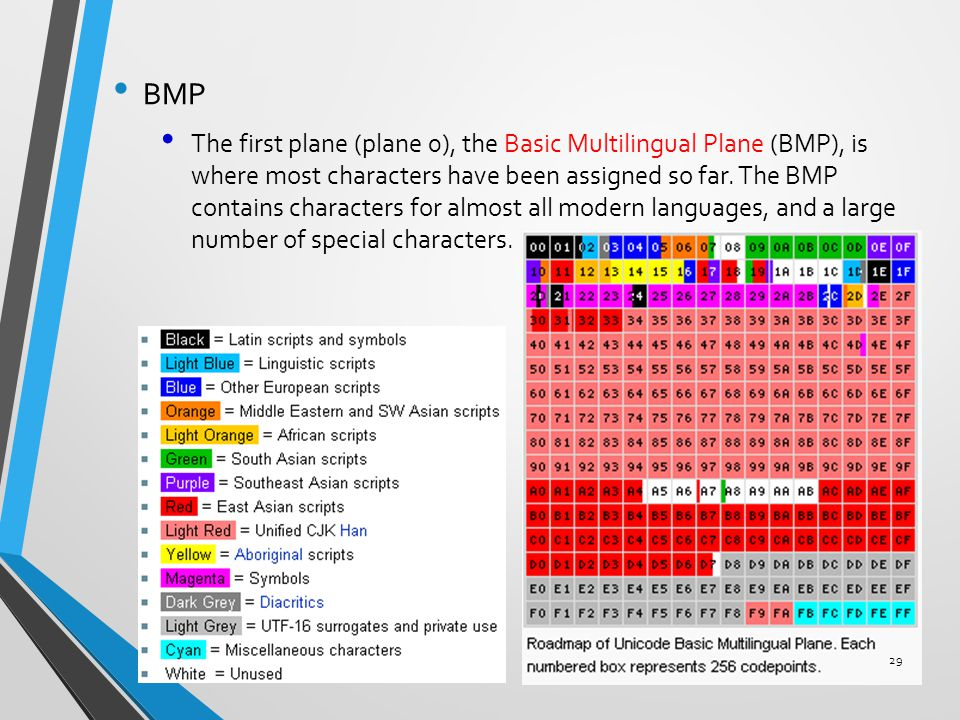Multiple Encodings
- UTF-8
- UTF-16
- UTF-32
- UTF-7
- UTF-1
- UTF-EBCDIC
- SCSU
- BOCU-1
- GB-18030
UTF-8 UTF-16 UTF-32

UTF-32
- Always uses 4 bytes to represent Unicode characters
- You can calculate the number of characters in a UTF-32 string by only counting bytes
- Incompatible with ASCII üò≤
- Endianness Problems solved with BOM
UTF-16
- Uses 2 to 4 bytes to represent Unicode characters
- Has the smallest capability between the 3 encodings üò≤
- Incompatible with ASCII üò≤
- Use Surrogate Pairs to encode points outside of the BMP (0x10000 to 0x10FFFF)
- Endianness Problems solved with BOM: U+FEFF
- UTF-16LE and UTF-16BE
UTF-16 Unicode mapping
- U+0000 to U+D7FF and U+E000 to U+FFFF
- U+D800 to U+DFFF: reserved
- U+10000 to U+10FFFF 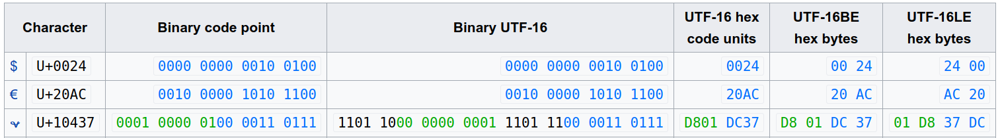
BOM

UTF-8
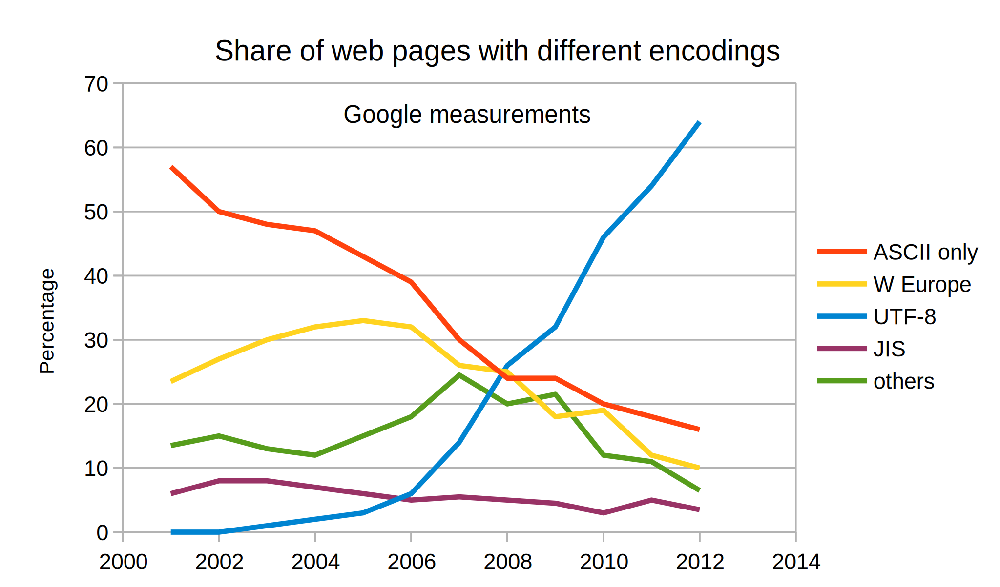UTF-8
- 1 to 6 bytes to represent Unicode characters
- Compatible with ASCII
- utf8everywhere Manifesto
UTF-8
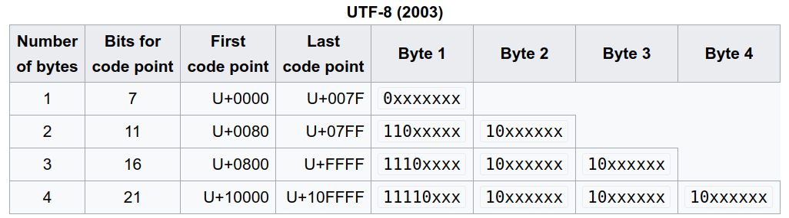 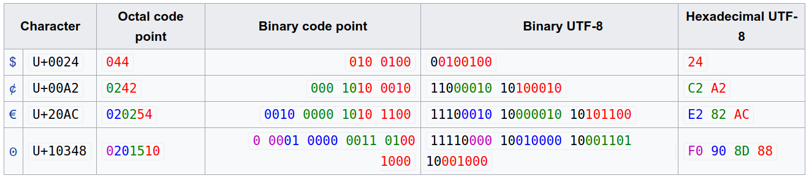Beware!! Faulty/Incomplete UTF-8 implementations
- MySQL's utf-8: just BMP
- PHP's utf-8: depending on the PHP version, may need utility functions to be created MANUALLY
Unicode Encodings Comparison
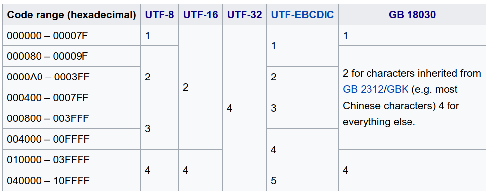Programming Language Examples
JVM: Java / Scala / Closure / etc...
- How are Strings represented internally in the JVM?
- Does the source file encoding affect the Compilation in the JVM?
- Does the bytecode encoding affect the Execution in the JVM?
JVM
- Characters represented internally as UTF-16
- javac / scalac
- -encoding: Sets the source file encoding name, such as EUC-JP and UTF-8. If the -encoding option is not specified, then the platform default converter is used.
JVM
- java / scala
- -Dfile.encoding: Default Character encoding in Java or charset is the character encoding used by JVM to convert bytes into Strings or characters when you don't define java system property "file.encoding". Java gets character encoding by calling System.getProperty("file.encoding","UTF-8") at the time of JVM start-up
JVM Examples
- üê®.scala
- WhereIsMyTildeUTF8.scala
- WhereIsMyTildeISO8859-1.scala
Util Tips
Unicode Input
- IBM personal computers: DOS, Windows
- alt codes (alt + 64)
- decimal
- Xorg
- Ctrl + Shift + u
- hexadecimal
- Platform Independent Applications
- emacs: Ctrl+x 8 Enter or Meta+x insert-char
- vim: in insert mode, the user first types Ctrl+V u, then types in the hexadecimal number of the symbol
- LibreOffice: type the hexadecimal number of a symbol and press Alt+X
Charset Detection
- Process of heuristically guessing the character encoding of a series of bytes that represent text
- Unreliable technique
- Used only when specific metadata, such as a HTTP Content-Type: header is either not available, or is assumed to be untrustworthy
- Usually involves statistical analysis of byte patterns
- UTF-{8,16} detection works well
- HTML documents must always have the Content-Type: header
- Encoding Conversion
Linux Tools
- enca
- detect and convert encoding of text files
- library: libenca.so
- iconv
- convert text from one character encoding to another
- library: glibc
Looking the bytes: hex editors
- hexedit
- conosle editor
- ghex
- GTK editor
Excel
- If the file starts with the bytes D0 CF 11 E0 A1 B1 1A E1 (source MSDN: Developing a tool to recognise MS Office file types (.doc, .xls, .mdb, .ppt)) + some other unknown conditions, it is identified as being an Excel native document
- Else, if the file starts with the bytes EF BB BF (UTF-8 Byte Order Mark, aka UTF-8 BOM), it is identified as being a text file in UTF-8 encoding
- Else, if the file starts with the bytes FF FE (UTF-16LE BOM), it is identified as being a text file in UTF-16LE (UTF-16 little endian) encoding
- Else, if the file starts with the bytes FE FF (UTF-16BE BOM), it is identified as being a text file in UTF-16BE (UTF-16 big endian) encoding
- Else, it is processed as if being a text file in current PC locale encoding (Windows control panel, Regional and language options, choose Country).